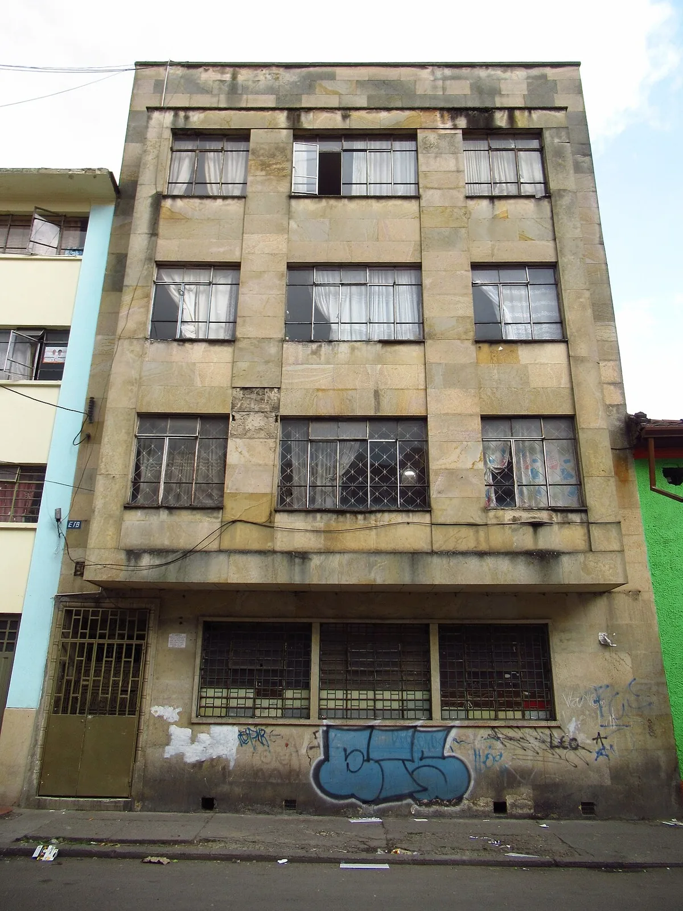
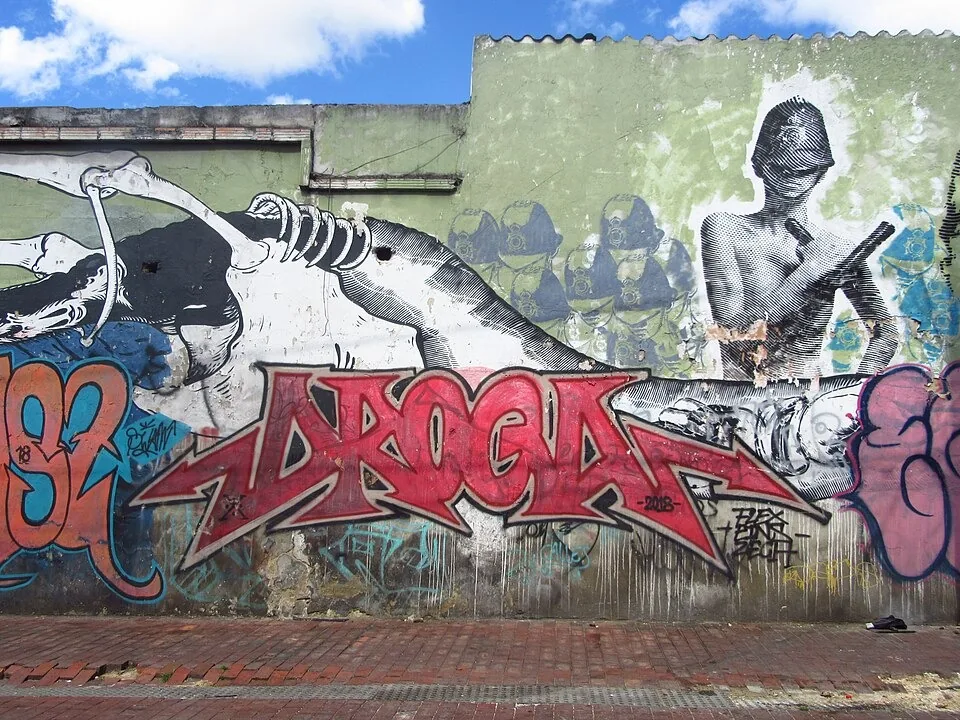

Una firma y un mural encargado pueden compartir una pared sin dirigirse al mismo público. La primera puede buscar el reconocimiento de otros escritores; el segundo responde también a un acuerdo sobre tema, presupuesto y superficie. El grafiti de Bogotá obliga a mirar esas condiciones de producción: quién interviene, ante quién y con qué posibilidad de decidir.
Bajo la palabra grafiti se reúnen prácticas con públicos y propósitos diferentes. El writing construye nombres, firmas y formas de reconocimiento entre escritores. Una consigna política comunica una posición; un mural puede desarrollar una imagen y responder a un encargo. Sus fronteras se cruzan, pero distinguirlas ayuda a leer una intervención: qué busca comunicar, a quién y bajo qué condiciones aparece.
La legibilidad tampoco funciona igual en todos los casos. Una firma puede dirigirse a otros escritores, capaces de reconocer el nombre, el estilo o la dificultad de la intervención. Que un transeúnte no descifre la palabra dice poco sobre su función dentro de esa conversación. El desacuerdo sobre una pared empieza a veces con una diferencia sobre quién es su interlocutor.
La autorización cambia las condiciones de una intervención: quién encarga, quién elige el soporte, cuánto tiempo se dispone y qué puede permanecer. Esas preguntas permiten estudiar la relación con las instituciones sin suponer que toda colaboración elimina la autonomía. También obligan a distinguir el reconocimiento de ciertos autores de la aceptación de todas las prácticas que suelen reunirse bajo la palabra grafiti.


Un mural comisionado puede disponer de permiso, presupuesto, materiales y tiempo de trabajo acordados. Una escritura sin encargo opera bajo otras restricciones. Comparar ambas solo por el acabado borra esa diferencia. Para estudiar su autonomía habría que conocer qué decisiones conservó el autor y cuáles dependieron de quien ofreció o autorizó la superficie.
La muerte de Diego Felipe Becerra hace imposible reducir la discusión a la calidad de las imágenes. Idartes recuerda que el joven de dieciséis años fue asesinado por un policía el 19 de agosto de 2011 y que el Estado pidió perdón público en 2023 por su ejecución extrajudicial. La misma entidad abrió en 2024 una invitación cultural en su memoria, en el marco de acciones de reparación y reconocimiento. [1]
El tránsito desde la persecución hasta el reconocimiento institucional no constituye una historia simple de aceptación. Obliga a preguntar qué cambia cuando la administración financia una práctica y qué expresiones siguen sin encontrar lugar dentro de sus programas. Un estímulo puede ampliar posibilidades de trabajo sin representar todas las posiciones de una escena. La memoria exige conservar también esas diferencias.
El marco documental tiene un cambio que importa señalar: el Decreto Distrital 649 de 2025 compila disposiciones del sector Cultura e incluye un título sobre práctica responsable del grafiti. El registro jurídico identifica el Decreto 075 de 2013 como derogado y compilado en aquel texto. Citar únicamente la norma de 2013 como vigente dejaría incompleta la referencia. [2] [3]
El cambio es significativo, pero merece una lectura menos complaciente. Cuando una ciudad convierte sus muros en una galería, también selecciona qué quiere mostrar. El grafiti que resulta atractivo para una ruta turística no necesariamente es el mismo que incomoda a una administración, cuestiona una institución o denuncia una violencia. La monumentalidad de un mural puede atraer visitantes y mejorar la percepción de un sector, pero no sustituye la complejidad de las escrituras que nacen de conflictos sociales concretos. La ciudad puede celebrar una imagen de rebeldía mientras procura que la rebeldía permanezca dentro de los límites de una imagen aceptable.
Un encargo, una exposición o un recorrido turístico pueden abrir oportunidades de ingreso y modificar qué imágenes reciben atención. Conviene seguir ese cambio en cada caso: quién paga, qué solicita y qué puede reproducir después. El paso al mercado merece una investigación sobre acuerdos y decisiones; celebrar o condenar por adelantado toda colaboración deja esas condiciones sin examinar.


La duración añade otra diferencia que conviene preguntar en cada caso. Una obra comisionada puede tener un plazo de exhibición; una firma puede reaparecer después de ser cubierta; una consigna puede responder a un acontecimiento inmediato. No hay una oposición estable entre imágenes institucionales permanentes y escrituras callejeras efímeras. Saber qué sucede con la superficie después de pintar ayuda a entender qué relación se buscaba con ella.
La discusión sobre autorización contiene derechos y responsabilidades que un juicio estético no puede sustituir. Que una imagen resulte atractiva no resuelve el consentimiento sobre su soporte. Que una expresión incomode tampoco justifica tratar a quien la produce como una amenaza. Una política cultural se vuelve discutible precisamente cuando hace visibles sus criterios de selección, sus procedimientos y los límites de su alcance.
Mirar el grafiti de Bogotá exige seguir la intervención más allá de su fotografía: el acuerdo o conflicto por el soporte, el público al que se dirige y lo que sucede cuando otra persona vuelve a pintar. Así se discuten expresión y convivencia sin reducirlas al gusto por una imagen. Cubrir una pared puede cerrar una intervención; la pregunta por quién pudo usarla permanece.
Fuentes.
- Idartes — memoria de Diego Felipe Becerra e invitación cultural, 23.05.2024
- Secretaría Jurídica Distrital — Decreto 649 de 2025, título 5
- Secretaría Jurídica Distrital — estado del Decreto 075 de 2013
Ensayo documental, con referencias institucionales y normativas consultadas el 13.11.2026. No es una guía de permisos ni una evaluación de todas las prácticas o artistas.
Fuentes consultadas el 13.11.2026. Interpretación y edición: RUMMOR. Edición de prueba para revisión.